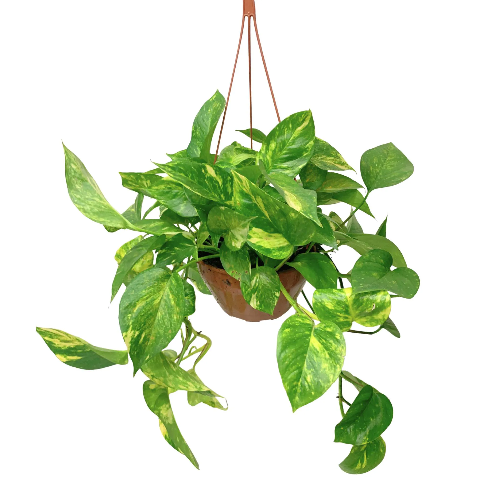
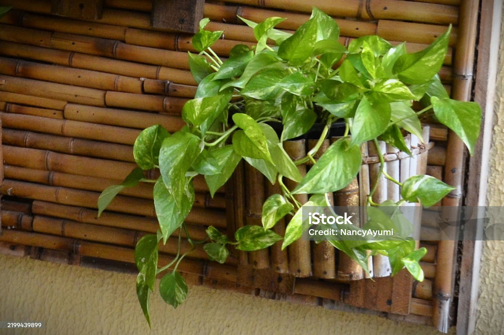

Planta jiboia
Natural das Ilhas Salomão, a jiboia é uma planta muito conhecida por aqueles que desejam decorar suas casas
com espécies que não exigem muita manutenção. Ela também é chamada de Epipremnum aureum e possui folhas em
formato de coração.Além de sua aparência encantadora, a planta tropical também é conhecida como sagrada. Na
cultura asiática, de onde ela vem, a espécie é considerada um símbolo de sorte e prosperidade, além de ser usada
em práticas espirituais e de cura. Por isso, muitas pessoas acreditam que ter a planta em casa atrai energias
positivas e expulsa as negativas do ambiente. Para os indígenas, a jiboia tem semelhança com a serpente de mesmo
nome. Muitas culturas indígenas veem a cobra como símbolo de cura e renovação e, por esse motivo, acreditam que
a planta também carrega a energia de transformação e equilíbrio espiritual.

Sobre
Principais curiosidades sobre a Jiboia verde
Antes de falar como cuidar da jiboia verde, separamos algumas curiosidades sobre a planta. Por exemplo, você
sabia que os povos ribeirinhos da Amazônia a consideram uma planta protetora e sagrada? Por isso, utiliza-se
bastante a jiboia verde nas casas para atrair vibrações positivas e proteger os moradores. Apesar de ser uma
planta trepadeira, a jiboia verde é uma das poucas espécies que se adapta à meia sombra. Outra curiosidade é que
seus ramos podem se estender até 1,20m de comprimento. Com boas práticas de cultivo, essa medida pode ser ainda
maior. Para isso, basta utilizar um bom substrato para plantas, mantê-lo úmido, com drenagem e matéria orgânica
adequadas.
Como cuidar da jiboia verde
- Regue a planta quando o solo estiver seco ao toque, evitando encharcar o vaso. Em estações quentes,
regue de duas a três vezes por semana. No inverno, regue uma ou duas vezes por semana.
- Coloque a planta em um local com luz indireta ou de baixa luminosidade, evitando a exposição direta ao
sol.
- Mantenha a planta longe de aquecedores ou ar condicionado, que podem secar o ar. Você pode aumentar a
umidade borrifando as folhas com água
- Adube a planta a cada três meses com fertilizantes orgânicos, como húmus de minhoca
- Retire as folhas secas e amareladas e os galhos mal formados durante a primavera
- Observe o aspecto da planta e retire as folhas doentes. Tenha cuidado com pragas como a cochonilha e a
aranha vermelha
Características
- Folhas
- Brilhantes, cerosas, em formato de coração, podem ser verde claro a verde escuro, com manchas amarelas
ou brancas
- Tamanho
- Pode atingir até 18 metros de comprimento, dependendo do ambiente
- Luz
- Adapta-se a diferentes condições de luz, desde as bem iluminadas às mais sombrias
- Água
- Não requer muita água, sendo regada quando a terra está seca
- Temperatura
- Adapta-se facilmente a temperaturas entre 17 °C e 30 °C
- Toxicidade
- Venenosa, contém oxalato de cálcio, que pode causar irritação em quem tem contato com ela
Contéudo

Final
Se você gostou do conteúdo, não esqueça de deixar seu like e se inscrever no canal. Até a próxima!